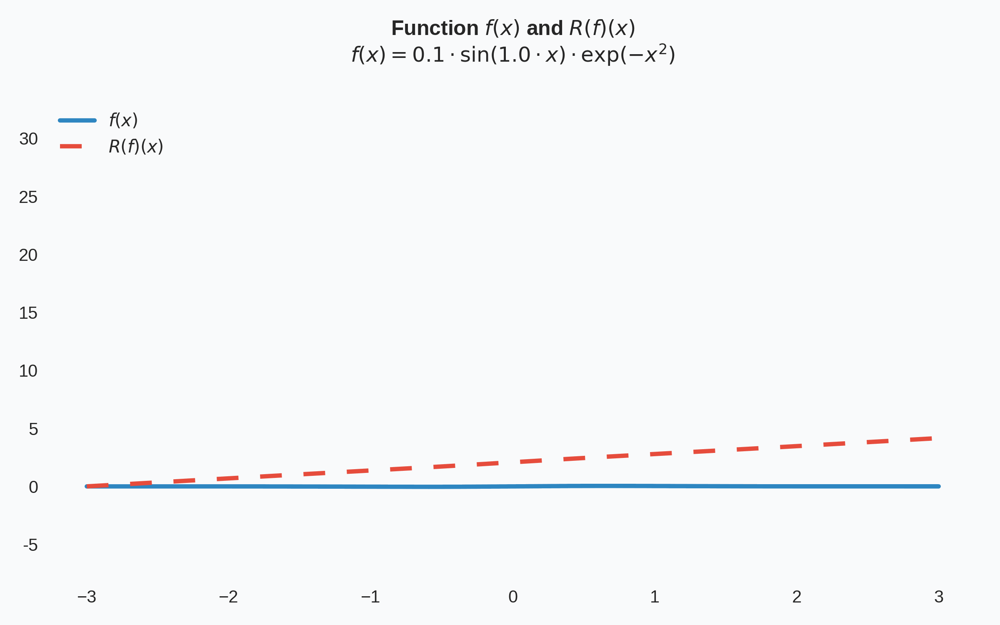
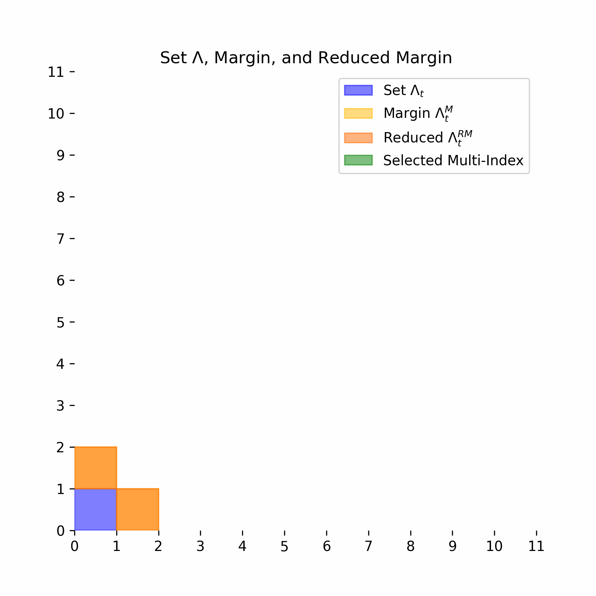
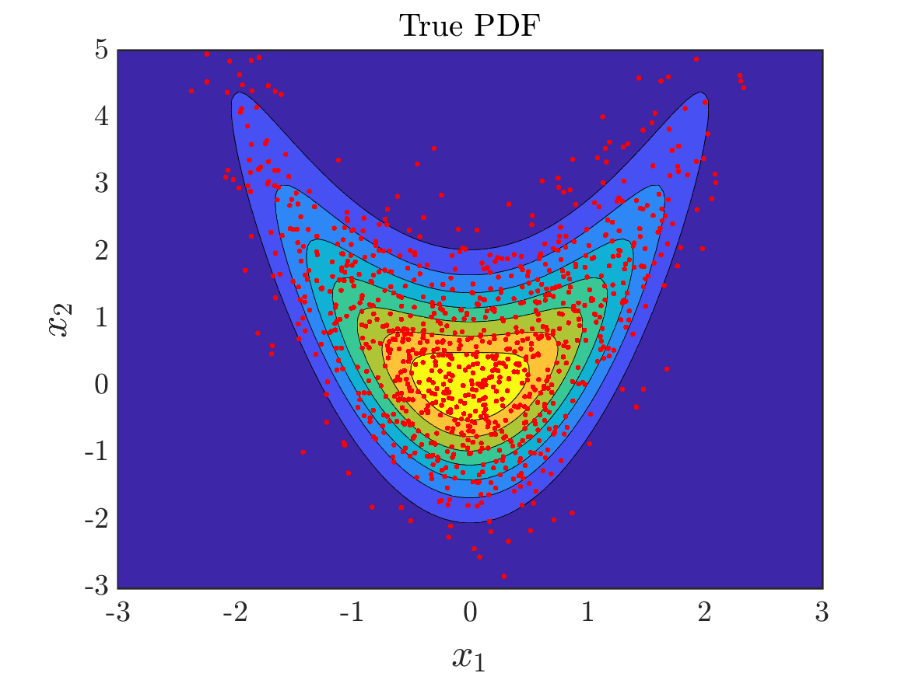
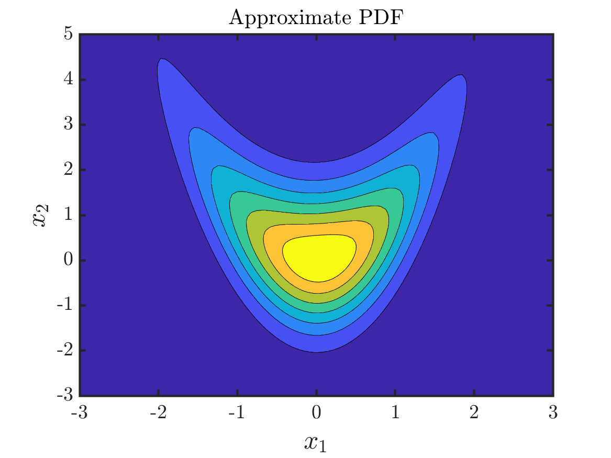

Knothe Maps and Conditional Sampling
A core problem of modern sampling is the approximation of high complexity distributions on \(\mathbb{R}^d\). If \(\mu \in \mathcal{P}(\mathbb{R}^d)\) is some distribution of interest, and \(\nu \in \mathcal{P}(\mathbb{R}^d)\) is an easily computable reference distribution (typically a Gaussian), a transport map \(t : \mathbb{R}^d \rightarrow \mathbb{R}^d\) satisfying \(\nu = t \# \mu\) provides a link between distributions that can potentially allow for easier density estimation (Tabak and Turner 2013), inference (El Moselhy and Marzouk 2012), and generative modeling, particularly exhibited in WGANs.
Optimal transport provides a widely used approach for computing such maps \(t\) through minimization of a relevant cost. However, the resulting map may not be amenable to fast computation, which is vitally important in some modern applications. Knothe maps provide a closely connected approach with certain benefits for a class of sampling problems. We focus on the efficient computation of Knothe maps, following the development of a recent algorithmic approach (Baptista, Marzouk, and Zahm 2023).
Knothe-Rosenblatt Maps
Definition
A Knothe-Rosenblatt map (Davis, Lii, and Politis 2011) is a transport map \(S : \mathbb{R}^d \rightarrow \mathbb{R}^d\) that decomposes component-wise into the form:
\[ S(\mathbf{x}) = \begin{bmatrix} S_1(x_1) \\ S_2(x_1, x_2) \\ \vdots \\ S_d(x_1, \dots, x_d)\\ \end{bmatrix} \] Each component function \(S_i\) may only depend on \(\mathbf{x}_{\leq i} = (x_1, \dots, x_i)\) and must be increasing with respect to \(x_i\). The triangular structure of Knothe-Rosenblatt maps allows for efficient computation of both the inverse and the Jacobian, improving computational speed, while the increasing condition ensures \(S_i\) is an increasing transport map between the marginals \(\mu(x_i \vert \mathbf{x}_{<i})\) and \(\nu(x_i \vert \mathbf{x}_{<i})\), which allows for direct connection with conditional sampling.
In particular, for Jacobian computation, we have the explicit formula:
\[ \vert \det \nabla S(\mathbf{x}) \vert = \prod_{i=1}^d \partial_i S_i(\mathbf{x}_{\leq i}) \] Therefore, computation of the determinant of the Jacobian relies upon fast evaluation of partials for the increasing part of each component function, which is relatively quick to compute.
If \(\mu \in \mathcal{P}(\mathbb{R}^d)\) is absolutely continuous with respect to \(\nu \in \mathcal{P}(\mathbb{R}^d)\) with \(\nu\) Gaussian, the Knothe-Rosenblatt map exists and is unique almost everywhere. (Bogachev, Kolesnikov, and Medvedev 2005)
Convergence Properties
Our eventual goal is to learn a close approximation of the Knothe-Rosenblatt map. Thus it is beneficial to examine convergence of maps \(S\) to the unique Knothe-Rosenblatt map \(S_{KR}\), assuming \(\nu\) is a standard Gaussian on \(\mathbb{R}^d\).
KL divergence is an extremely popular statistical measure for quantification of the distance between two probability distributions in generative modeling. For the Knothe-Rosenblatt map, any triangular map \(S\) converges to \(S_{KR}\) in \(L^2_{\mu}\) when \(\mathcal{D}_{KL}(\mu \vert \vert S \# \nu) \rightarrow 0\).
Define the functional:
\[ \mathcal{J}_i(s) = \int \left( \frac 1 2 s(\mathbf{x}_{\leq i})^2 - \log \vert \partial_i s(\mathbf{x}_{\leq i}) \vert \right) d\mu \] By decomposition of the Gaussian, one can write:
\[ \mathcal{D}_{KL}(\mu \vert \vert S \# \nu) = \sum_{i=1}^d \mathcal{J}_i(S_i) - \mathcal{J}_i(S_{KR,i}) \] For a given sample of data \(\{\mathbf{X}^k\}_{k=1}^n\) from \(\mu\), minimization of the above leads to a maximum likelihood estimator \(\hat{S}\) for \(S_{KR}\):
\[ \hat{S} = \arg \max \sum_{k=1}^n \log S \# \nu (\mathbf{X}^k) \]
where \(S\) are maximized over the space of triangular maps with \(\partial_i S_i > 0\) for all \(i\). This generates a convex optimization problem that can be parallelized in each component, as each \(\mathcal{J}_i\) functional is independent.
Learning a Knothe-Rosenblatt Map
Rectification Operator
The monotone condition on \(S\) is necessary for the formulation of triangular maps, but is inconvenient for learning, as most functional bases do not conveniently allow for this constraint to be satisfied. To solve this issue and allow for the use of standard functional bases, a rectifier functional \(\mathcal{R}\) must be introduced, defined component-wise as the following:
\[ \mathcal{R}_i(f)(\mathbf{x}_{\leq i}) = f(\mathbf{x}_{<i},0) + \int_0^{x_i} g\left(\partial_i f(\mathbf{x}_{<i}, t)\right) dt \]
If \(g: \mathbb{R} \rightarrow \mathbb{R}^+\) is a positive function, this transforms any \(f\) of sufficient smoothness into a function satisfying the increasing condition in the last variable component-wise.

Then the core component-wise learning of a Knothe-Rosenblatt map relies on the optimization problem:
\[ \min_{f\in V_i} \mathcal{J}_i(\mathcal{R}_i(f)) \] where \(V_i\) is a suitable linear space of sufficiently smooth functions.
Under some additional assumptions on the choice of \(g\), and assuming the tails of the target distribution \(\mu\) are Gaussian, there exists a unique global minimizer for the optimization problem using this rectifier, and the optimization landscape is relatively favorable. For a full treatment of the theoretical argument, refer to Section 3 of (Baptista, Marzouk, and Zahm 2023).
Functional Basis Expansion
For each \(i\), we approximate \(f\) by a particular chosen basis for a suitable function space. In particular, we represent:
\[ f(\mathbf{x}_{\leq i}) = \sum_{\alpha \in \Lambda} c_{\alpha} \psi_{\alpha}(\mathbf{x}_{\leq i}) \] In the above, \(\Lambda\) forms the set of multi-indices \(\alpha = (\alpha_1, \alpha_2, \dots, \alpha_i) \in \mathbb{N}^i\) with \(\vert\Lambda \vert = m\), with \(c_\alpha \in \mathbb{R}\) coefficients and \(\psi_{\alpha} : \mathbb{R}^i \rightarrow \mathbb{R}\) basis functions for \(V_i\).
The basis functions \(\psi_{\alpha}\) are constructed as products of single variable functions:
\[ \psi_{\alpha}(\mathbf{x}_{\leq i}) = \prod_{j=1}^i \psi^j_{\alpha_j}(x_j) \]
Suitable choices for functional spaces include Hermite polynomials and Ricker wavelets, which provide expressive one- or two-parameter families of functions with well-known approximation properties that are suitable to many transport problems.
Multi-Index Set Construction
Note that the richness of the functional basis is directly tied to the size \(m\) of the multi-index set \(\Lambda\). Thus controlling this size gives a natural method to learn several different hierarchical expansions at varying levels of complexity. However, choosing which components to spend this finite budget of complexity on is a nontrivial problem.
Fortunately, a greedy algorithm is well suited to this task, as we have easily computable heuristics to inform each choice. In particular, we define \(\Lambda_0 = \emptyset\) and iteratively update:
\[ \Lambda_{t+1} = \Lambda_t \cup \{\alpha_t^*\} \] There are several necessary conditions for \(\alpha_t^*\). First, \(\alpha_t^* \notin \Lambda_t\) must hold. Second, we wish for the basis approximation to add complexity in a orderly manner, rather than adding random basis functions of high degree when one of lower degree will suffice. Thus we constrain the set \(\Lambda_t\) to be downward closed:
\[ \alpha \in \Lambda_t \text{ and } \alpha' \leq \alpha \implies \alpha' \in \Lambda_t \] We next define the margin of the set \(\Lambda_t\). Let \(e_j\) denote the \(j\)-th canonical basis vector of \(\mathbb{N}^i\):
\[ \Lambda_t^M = \{\alpha \notin \Lambda_t : \exists j > 0, \alpha - e_j \in \Lambda_t\} \] Intuitively this means that the margin is any multi-index that is one shift away, in any direction, from the set \(\Lambda_t\). The reduced margin is stronger in that the multi-index must be one shift away not in one, but in every direction:
\[ \Lambda_t^{RM} = \{\alpha \notin \Lambda_t : \forall j > 0, \alpha - e_j \in \Lambda_t\} \] For our greedy algorithm, we add multi-indices via the following optimization procedure:
\[ \alpha_t^* \in \arg \max_{\alpha \in \Lambda_t^{RM}} \vert \nabla_{\alpha} \mathcal{J}_i(\mathcal{R}_i(f_i)) \vert \]
That is, evaluate the derivative of the loss in the direction of each basis function under consideration, and choose to add the index with the largest derivative.
Below we illustrate this entire process for an example multi-index set:

Adaptive Transport Map Algorithm
Using the above pieces, we can write the full algorithm for learning a map component \(S_i\) approximating the Knothe-Rosenblatt map component \(S_{KR,i}\):
Algorithm 1 (Baptista, Marzouk, and Zahm 2023): Estimate map component \(S_i\)
Input: Training sample \(\{X^k_{1:i}\}_{k=1}^{n}\), cardinality \(m\) for \(\Lambda_t\)
Initialize: \(\Lambda_0 = \emptyset\), \(f_0 = 0\)
for \(t = 0, \dots, m-1\):
Construct the reduced margin: \(\Lambda_t^{RM}\)
Select the new multi-index:
\[ \alpha_t^* \in \arg\max_{\alpha \in \Lambda_t^{RM}} |\nabla_{\alpha} \mathcal{J}_i(\mathcal{R}_i(f_t))| \]
Update the active set: \(\Lambda_{t+1} = \Lambda_t \cup \{\alpha_t^*\}\)
Update the approximation:
\[ f_{t+1} = \arg\min_{f \in \text{span}\{\psi_{\alpha} : \alpha \in \Lambda_{t+1}\}} \mathcal{J}_i(\mathcal{R}_i(f)) \]
Output: \(\hat{S}_i = R_i(f_m)\)
In practice, the value of \(m\) can be considered a hyperparameter and optimized through cross-validation.
Algorithm Application
Matlab code for learning Knothe-Rosenblatt maps is available on GitHub. From this repository, quick replication and extension of experiments is possible. Below we showcase the standard sampling problem: given \(1000\) points sampled from a true pdf, and using a reference measure that is standard Gaussian, approximate the true pdf by learning an approximation to the Knothe-Rosenblatt map.
 A total of \(1000\) sampled points from the given true distribution.
 The approximated distribution using the learned triangular map with Hermite polynomial basis.